The update procedure presented in this section uses the precompiled firmware packages delivered with Smart Remote. However, the DFU process looks exactly the same if you were to use your own firmware packages.
Introduction
Smart Remote comes with precompiled firmware packages which you can use to test the DFU process. You can find them in the Precompiled Firmware folder:
PCA20023-SR3_nRF52832_Product_Example_DFU_Package - Precompiled firmware package for the product example based on nRF52832.PCA63519-SR3_nRF52832_Shield_DFU_Package - Precompiled firmware package for the Smart Remote DK add-on.PCA20031-SR3_nRF52810_Product_Example_DFU_Package - Precompiled firmware package for the product example based on nRF52810.
These packages are fully functional and do not require you to generate new keys, bootloader, or bootloader settings, as long as you use the provided precompiled firmware. If you want to run a DFU on your own application, you need to create your own DFU ZIP package, keys, and bootloader. See Generating custom firmware packages for DFU.
There are two ways to run a DFU: using a desktop or a mobile device. The procedure is the same for the product example and for the DK add-on.
Performing the upgrade with nRF Connect (desktop)
Install the following software on your desktop computer before running this procedure:
You will also need either an nRF51 or an nRF52 DK board that will function as a connectivity board during DFU.
- Power on the device that is being updated. Make sure your Smart Remote is programmed with an appropriate firmware HEX file. See Step-by-step firmware configuration.
- Connect another DK to your computer through the USB port. This DK will serve as an intermediate connectivity board. You can use either an nRF51 or an nRF52 DK for this purpose. It is recommended to erase this board prior to using it for DFU.
- Run nRF Connect. From the list of ports, choose the serial port on which the connectivity board is connected.
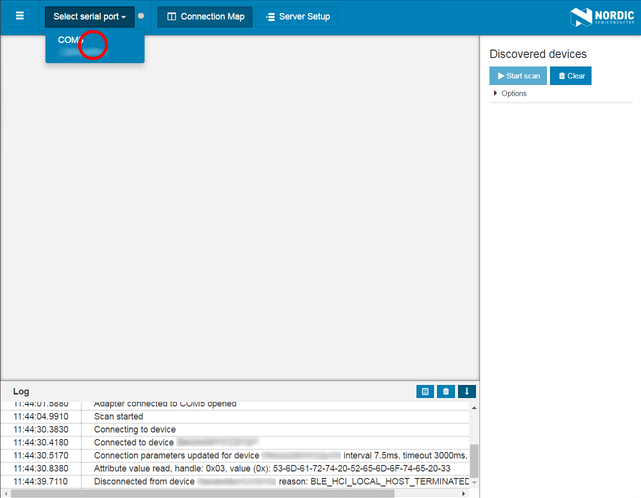
- If the board was erased before, a message appears saying that no connectivity firmware was detected. Agree to automatically update the connectivity firmware.
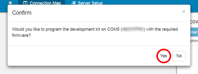
- Click Start Scan. From the available discovered devices, connect to
Smart Remote 3. Make sure it is not bonded to another host.
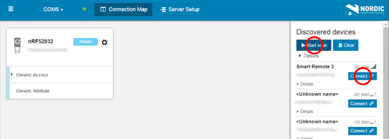
- Note
- The list of discovered devices is not automatically refreshed when they stop advertising. Whenever you have problems connecting to a device from the list, try clearing the list and rerunning the scan. If Smart Remote stops advertising, tap or move the device to wake it up from low power mode.
- Open pairing settings for the newly connected device.
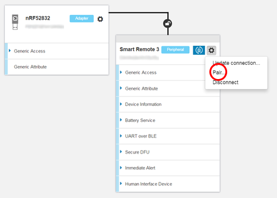
- When pairing, make sure to check the Perform bonding option.
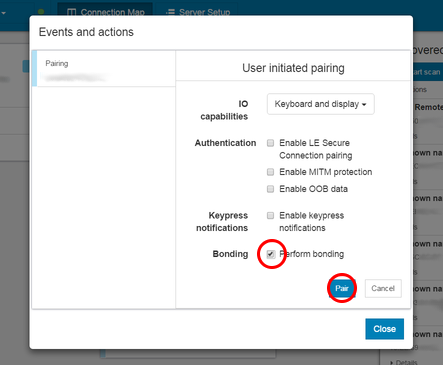
- When the device is bonded, close the window.
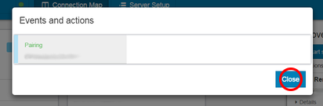
- Click the DFU icon in nRF Connect.
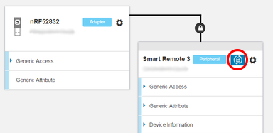
- Select the package to be transmitted to your device.
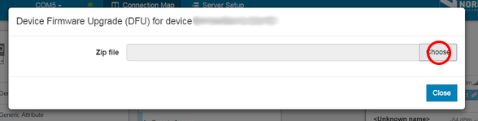
- After selecting the package, click Start DFU.
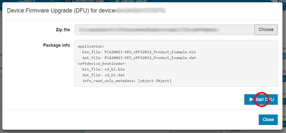
- Smart Remote device reboots to the bootloader and enters DFU mode. nRF Connect disconnects and automatically reconnects to the device using the same bonding information.
- The DFU package is now uploaded to Smart Remote.
- Note
- For packages containing a complete firmware (a package with the SoftDevice, bootloader, and application), this is a two-stage process, in which the SoftDevice and the bootloader are updated first, followed by the application.
- Progress can be observed on the graph.
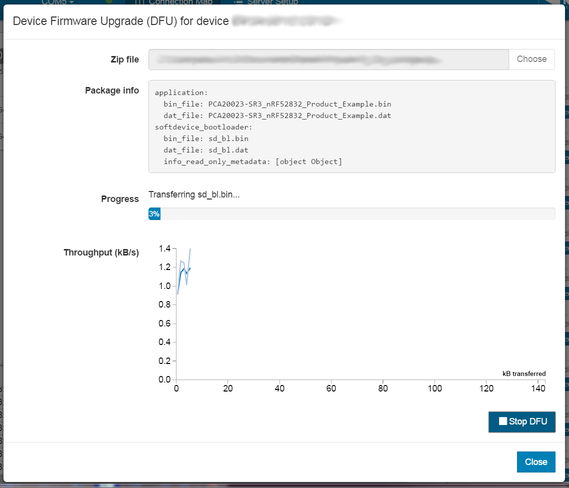
- Wait until the DFU process is completed.
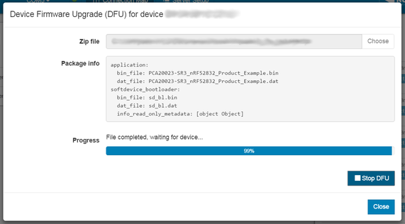
- When the package upload is completed, the device reboots. In a two-stage process, the device re-enters the bootloader to continue upload of the second part of the DFU package.
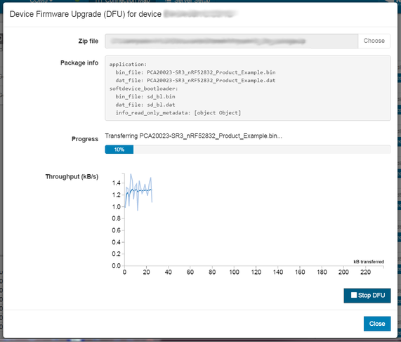
- After the DFU process is finished, the device reboots back to the application.
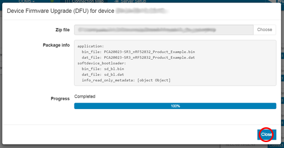
Performing the upgrade (mobile)
Install the following software on your mobile device before running this procedure:
- Transfer the ZIP packages that will be used for DFU to your mobile device.
- Power on the product example or the DK add-on. Make sure your Smart Remote is programmed with an appropriate HEX file. See Step-by-step firmware configuration.
- Open nRF Connect on your mobile device.
- Tap Scan and find
Smart Remote 3 on the discovered devices list.
- Connect to the Smart Remote device.
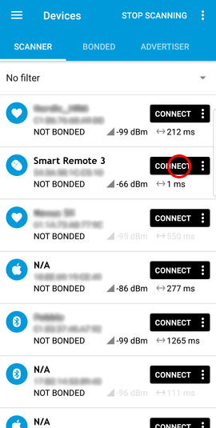
- Open the settings and bond with the device.
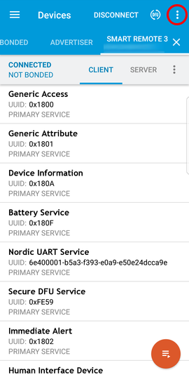
- Tap Bond to bond with the device.
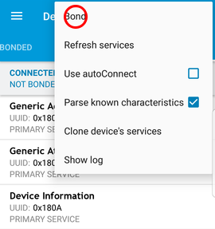
- Note
- The list of discovered devices is not automatically refreshed when they stop advertising. Whenever you have problems connecting to a device from the list, try refreshing the list. If Smart Remote stops advertising, tap or move the device.
- To start the DFU process, tap the DFU icon.
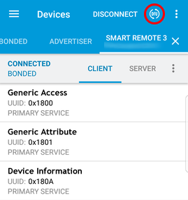
- Select Distribution packet (ZIP) and navigate to the ZIP package that you have previously uploaded to your mobile device.
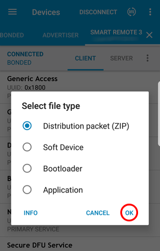
- Smart Remote reboots to the bootloader.
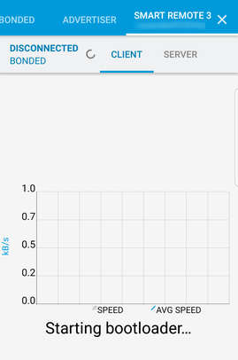
- The host reconnects to the device using the same bonding information.
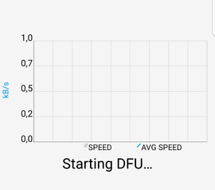
- The DFU package is now uploaded to Smart Remote.
- Note
- For packages containing a complete firmware (a package with SoftDevice, bootloader, and application), this is a two-stage process in which the SoftDevice and the bootloader are updated first, followed by the application. The Android version of nRF Connect performs DFU process in the background service. For information on the current stage and progress of the DFU, check the Android status bar.
- Progress can be observed on the graph.
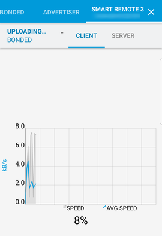
- Alternatively, progress can be observed on the Android status bar.
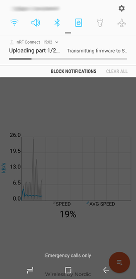
- When package upload is completed, the device reboots. In a two-stage process, the device re-enters the bootloader to continue upload of the second part of the DFU package.
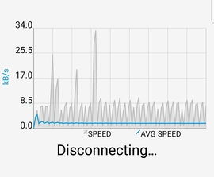
- Progress can be observed as before. Note that information about the package part being currently uploaded is provided.
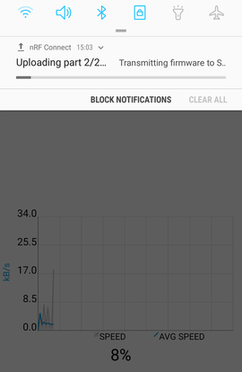
- After the DFU process is finished, the device reboots back to the application. Refresh the services if needed.
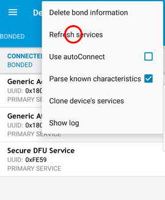